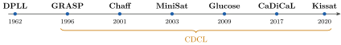
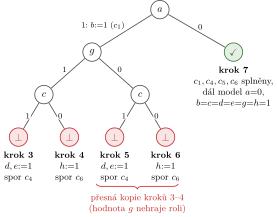
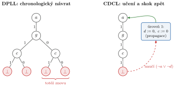
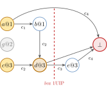
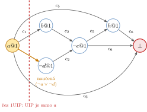
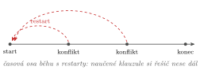
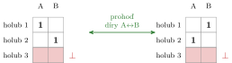

14.2 Jak fungují SAT řešiče: DPLL a CDCL¶
Všechny známé algoritmy pro \(\href{../ch-cook/ch-cook-cook-levinova-veta.html#prob-sat}{\class{woo-pk-prob-sat}{\prob{SAT}}}\) jsou v nejhorším případě (téměř) exponenciální. V praxi ale řešiče zvládají obrovské instance – verifikace hardwaru a softwaru, plánování, kryptoanalýza. Jádrem všech moderních řešičů jsou dva algoritmy: DPLL a jeho vylepšení CDCL. Řešičů je spousta a každý rok soutěží v SAT Competition; příkladem je Kissat (Armin Biere), který si vyzkoušíme v oddílu 14.6.

14.2.1 DPLL: backtracking + unit propagation¶
Definice 14.10: DPLL (Davis–Putnam–Logemann–Loveland, 1962)
Rekurzivní prohledávání ohodnocení se dvěma pravidly:
- Unit propagation:
- klauzule má jediný nepřiřazený literál \(\ell\) a ostatní její literály jsou nepravdivé \(\Rightarrow\) nutně \(\ell=1\). Šíříme, dokud jde.
- Větvení + konflikt:
- nic nešíříme \(\Rightarrow\) vybereme nepřiřazenou proměnnou \(x\) a zkusíme jednu hodnotu, pak druhou. Konflikt (klauzule se všemi literály nepravdivými) \(\Rightarrow\) backtrack – návrat k poslednímu rozhodnutí, které má ještě nevyzkoušenou hodnotu.
Algoritmus 14.2: DPLL(\(\varphi\), \(\tau\))
- proveď unit propagation (rozšiřuje \(\tau\))
- if některá klauzule má všechny literály nepravdivé then
- return NESPLNITELNÁ▷ konflikt
- if všechny klauzule jsou splněné then
- return \(\tau\)
- vyber nepřiřazenou proměnnou \(x\)
- for all \(v\in\{1,0\}\) do
- if DPLL(\(\varphi\), \(\tau\cup\{x=v\}\)) vrátí model then
- return ten model
- return NESPLNITELNÁ
Přednáška u pravidla větvení píše „zkusíme 0, pak 1“, obrázek přechodu DPLL \(\to\) CDCL ale větví nejdřív hodnotou 1. Pořadí hodnot (i pořadí proměnných) je volba heuristiky – na korektnosti nic nemění.
Příklad 14.11: Běh DPLL
Klauzule (stejné jako v příkladu CDCL níže): \(c_1=(\lnot a\lor b)\), \(c_2=(\lnot b\lor\lnot c\lor d)\), \(c_3=(\lnot d\lor e)\), \(c_4=(\lnot a\lor\lnot d\lor\lnot e)\), \(c_5=(\lnot a\lor c\lor h)\), \(c_6=(\lnot a\lor c\lor\lnot h)\); proměnná \(g\) se vyskytuje jen v jiných klauzulích (nemá s konfliktem nic společného). Větvíme v pořadí \(a,g,c\), nejdřív hodnotou 1.
Řešení
| krok | rozhodnutí | unit propagation | výsledek |
|---|---|---|---|
| 1 | \(a=1\) | \(c_1\): \(b=1\) | – |
| 2 | \(a=1,\ g=1\) | – | – |
| 3 | \(a=1,\ g=1,\ c=1\) | \(c_2\): \(d=1\); \(c_3\): \(e=1\) | \(c_4\) konflikt \(\Rightarrow\) zkus \(c=0\) |
| 4 | \(a=1,\ g=1,\ c=0\) | \(c_5\): \(h=1\) | \(c_6\) konflikt \(\Rightarrow\) zpět, zkus \(g=0\) |
| 5 | \(a=1,\ g=0,\ c=1\) | \(b=1\), \(d=1\), \(e=1\) | \(c_4\) konflikt (totéž znovu) |
| 6 | \(a=1,\ g=0,\ c=0\) | \(b=1\), \(h=1\) | \(c_6\) konflikt \(\Rightarrow\) zpět, zkus \(a=0\) |
| 7 | \(a=0\) | – | \(c_1,c_4,c_5,c_6\) splněny (obsahují \(\lnot a\)) |
Ve větvi \(a=0\) zbývají jen \(c_2,c_3\); další rozhodnutí (např. \(g=1\), \(c=1\), \(b=1\) vynutí \(d=1\), \(e=1\)) najdou model \(a=0\), \(b=c=d=e=g=h=1\) (ověřeno skriptem). Kroky 5–6 jsou přesná kopie kroků 3–4: hodnota \(g\) s konfliktem nesouvisí, ale DPLL to neví.

Proč samotné DPLL nestačí
Backtracking zapomene, proč větev selhala – a stejnou chybu udělá znovu (kroky 5–6 výše).
14.2.2 Od DPLL k CDCL¶
CDCL = Conflict-Driven Clause Learning (Marques-Silva & Sakallah, 1996). Proti DPLL dělá dvě věci jinak:
- z konfliktu odvodí klauzuli (naučí se ji), takže příště stejnou chybu nezopakuje;
- skočí zpět rovnou na úroveň, kde chyba vznikla (backjumping), a rozhodnutí, která s konfliktem nesouvisí (zde \(g\)), přeskočí.

14.2.3 CDCL: konflikt v implikačním grafu¶
Zápis \(x@k\) znamená „\(x\) přiřazeno na rozhodovací úrovni \(k\)“. Úroveň se zvýší s každým rozhodnutím; vše, co unit propagation vynutí, dostane úroveň posledního rozhodnutí. Posloupnost přiřazení v pořadí, jak vznikala, je trail.
Definice 14.12: Implikační graf CDCL
Vrcholy jsou přiřazení (\(a@1\), \(b@1\), …) a konflikt \(\bot\); hrana \(u\to v\) s popiskem \(c_i\) znamená „přiřazení \(v\) vynutila klauzule \(c_i\) (mimo jiné kvůli \(u\))“. Rozhodnutí nemají předchůdce.
Příklad 14.13: Průběh CDCL do prvního konfliktu
Klauzule \(c_1,\dots,c_6\) z příkladu 14.11, větvíme opět \(a,g,c\) hodnotou 1:
Řešení
| úroveň | rozhodnutí | propagace |
|---|---|---|
| 1 | \(a=1\) | \(c_1\): \(b=1\) |
| 2 | \(g=1\) | – |
| 3 | \(c=1\) | \(c_2\): \(d=1\); \(c_3\): \(e=1\); \(c_4\): konflikt |

14.2.4 CDCL: analýza konfliktu a skok zpět¶
Rezoluce (nad rámec přednášky – připomenutí): z klauzulí \((A\lor x)\) a \((B\lor\lnot x)\) odvodíme \((A\lor B)\); každé ohodnocení splňující obě splňuje i rezolventu. Přednáška ji značí \(\oplus\).
Postup: Analýza konfliktu (1UIP)
Začni klauzulí, která je v konfliktu. Dokud obsahuje víc než jeden literál z poslední (konfliktní) úrovně, rezolvuj ji s klauzulí, která vynutila naposledy přiřazený z těchto literálů (jdeme po trailu pozpátku). Výsledek se naučíme. Odpovídá řezu implikačním grafem těsně za prvním UIP (unique implication point) – vrcholem poslední úrovně, přes který vedou všechny cesty od jejího rozhodnutí ke konfliktu (zde \(d@3\)).
Příklad 14.14: Analýza konfliktu, skok zpět a druhý konflikt
| klauzule | literály z úrovně 3 | krok |
|---|---|---|
| \(c_4=(\lnot a\lor\lnot d\lor\lnot e)\) | \(\lnot d,\ \lnot e\) | dva \(\Rightarrow\) rezolvuj podle \(e\) (vynutila ho \(c_3\)) |
| \(c_4\oplus c_3=(\lnot a\lor\lnot d)\) | jen \(\lnot d\) | stop: naučíme \((\lnot a\lor\lnot d)\) |
Řešení
Skok zpět na úroveň 1 (úroveň 2 s \(g\) přeskočíme). Tam je naučená klauzule jednotková (\(a=1\)), takže propagace pokračuje:
Druhý konflikt nastal na úrovni 1 bez dalšího rozhodnutí, takže 1UIP je samo rozhodnutí \(a\). Rezoluce (nad rámec přednášky – slajd uvádí jen výsledek): \(c_6\oplus c_5=(\lnot a\lor c)\), \(\oplus\,c_2=(\lnot a\lor\lnot b\lor d)\), \(\oplus\,(\lnot a\lor\lnot d)=(\lnot a\lor\lnot b)\), \(\oplus\,c_1=(\lnot a)\). Jednotková klauzule \((\lnot a)\) platí na úrovni 0, tedy natrvalo: \(a:=0\), a odtud řešič najde model jako v kroku 7 příkladu DPLL.

Naučená klauzule je rezolventa původních, tedy jejich důsledek: splnitelnost se nezmění, prostor k prohledání se zmenší. (Skriptem ověřeno, že \((\lnot a\lor\lnot d)\) i \((\lnot a)\) z \(c_1,\dots,c_6\) plynou.)
14.2.5 CDCL za běhu: heuristiky a restarty¶
Co dělá moderní řešič rychlým:
- VSIDS:
- větví proměnné z nedávných konfliktů.
- Watched literals:
- klauzule sleduje jen 2 literály (unit propagation se tak nemusí dívat na celou klauzuli při každém přiřazení).
- Restarty:
- občas zapomene rozhodnutí a začne znovu.
- Preprocessing:
- před startem zjednoduší formuli.

Klíčová myšlenka
Restarty nejsou prohra – naučené klauzule zůstávají.
14.2.6 Symetrie: slepá skvrna CDCL¶
Mnoho instancí je symetrických: holubník, barvení (permutace barev), rozvrhy. CDCL symetrii nevidí: tutéž slepou uličku projde znovu pro každou symetrickou kopii.

Rozbití symetrie (preprocessing)
- Symetrie formule = automorfismy grafu klauzulí a literálů.
- Přidáme klauzule: z každé třídy symetrických ohodnocení zůstane jeden zástupce.
Nástroje: Shatter, BreakID, Satsuma (2024); pak běžný řešič. Ruční rozbití symetrie barev uvidíme na Schurově problému (oddíl 14.6).
Typické chyby
- „Jednotková klauzule“ v unit propagation není jen klauzule délky 1: je to klauzule, v níž jsou všechny literály kromě jednoho už nepravdivé a ten jeden je nepřiřazený.
- Naučená klauzule nemění množinu řešení – je to důsledek původních klauzulí (rezolventa). Kdo „učí“ klauzuli, která z formule neplyne, může zahodit řešení.
- Analýzu konfliktu ukončit příliš brzy nebo pozdě: stop je, když v klauzuli zbývá přesně jeden literál z konfliktní úrovně (1UIP). U nás \((\lnot a\lor\lnot d)\), ne \(c_4\) (dva literály z úrovně 3) ani \((\lnot a\lor\lnot c)\) (rezolvováno až k samotným rozhodnutím).
- Skákat zpět jen o jednu úroveň jako DPLL. CDCL skočí na úroveň, kde se naučená klauzule stane jednotkovou – (nad rámec přednášky) obecně na druhou nejvyšší úroveň mezi jejími literály (zde úroveň 1 literálu \(\lnot a\)).